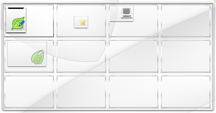
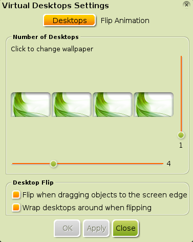
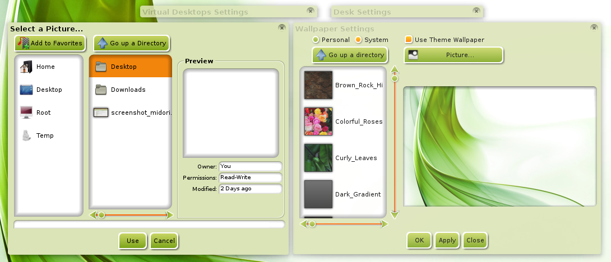

Bodhi - Guiden till Enlightenment
Virtuella Skrivbord
Virtuella Skrivbord (Kallas ibland för "workspaces") används i näst intill alla fönsterhanterare (i alla fall de för Linux/Unix system). Virtuella Skrivbord tillåter dig att organisera ditt arbete, genom att ge dig möjligheten att köra olika program på olika skrivbord.
Detta kan verka vara en ovanlig och onödig funktion till en början, men du kan vara säker på att när du kommit in i vanan att använda flera skrivbord är det svårt att gå tillbaks till att bara använda ett enda.
Byta Virtuella Skrivbord
Enlightenment (E17) kan både visa dina Virtuella Skrivbord (med Pager Gadgeten) och en snabbtangent för att navigera mellan dem.
Även utan en "Pager" installerad eller igång, kommer tangentkombinationen CTRL+ALT+[höger piltangent] ta dig till skrivbordet åt höger, och CTRL+ALT+[vänster piltangent] ta dig tillbaks till skrivbordet år vänster.
Visa dina Virtuella Skrivbord
För en grafisk, navigerbar representation av dina virtuella skrivbord finns Pager Gadgeten.
Beroende av vilken Profil du valt (under installtionen av Bodhi Linux), kommer "Pager" att se olika ut: olika antal rader och kolumner av tumnagel representationer av skrivborden och antingen på skrivbordet eller på en Shelf.
Här är en skärmdump av Pager på skrivbordet i Profilen "Fancy":

Och detta är hur Pager ser ut på en Shelf i "Laptop" Profilen.
Du kan byta från ett Virtuellt Skrivbord till ett annat genom att klicka på dess tumnagel.
Lägg märke till hur tumnaglerna som är näst längst (överst) till vänster har en blå bild. Det är bilden som används som bakgrundsbild för skrivbordet, och att den vara visas på en tumnagel visar att det är det aktiva skrivbordet för tillfället.
Lägg också märke till att den (övre) vänsta tumnageln i båda skärmdumparna har två grå boxar. These are graphics representing the open applications on that desktop, in this case LXTerminal and Leafpad.
Inställningar för Virtuella Skrivbord
Som med det mesta i E17, behöver du inte anpassa dig till uppsättningen av Virtuella Skrivbord som kom med installationen. I "Fancy" Profilen ovan har Pager fyra kolumner och tre rader, vilket kan vara för mycket för vissa användare. "Laptop" Profilen har bara en rad, vilket är bra om du vill ha din Pager på en Hylla - men det finns inget som stoppar dig från att ha två eller fler rader i din Pager på den, eller någon annan Shelf!
För att ändra upplägg och utseende använd Inställnignar för Virtuella Skrivbord dialogen. Detta kan göras på två sätt:
1) höger-klicka på dinPager och välj Virtual Desktop Settings
2) Main Menu -> Settings -> All -> Screen -> Virtual Desktops.

I Virtual Desktops Settings fönstert som framträder kan du ändra antalet rader och kolumner som visas med hjälp av de lodräta och vågräta skjutreglagen.
Nedanför detta finns det två kryssrutor:
Flip when dragging objects to the screen edge är fn. inaktiverad och har ingen inverkan, oavsett om rutan är ikryssad eller ej.
Wrap desktops around when flipping styr huruvida systemet fortsätter tillbaka till första skrivbordet efter man passerar det sista skrivbordet och tvärt om, eller om man måste backa.
Klicka på något av skriborden, så öppnas ett Desk Settings fönster. I detta fönster kan du inte bara byta namn på det Virtuella Skrivbordet, du kan även välja vilken bild som helst på din dator som bakgrund för detta specifika Virtuella Skrivbord genom att klicka på Set knappen. I Wallpaper Settings fönstret som öppnas kan du klicka Picture knappen för att öppna Select a Picture... dialogen.

Flytta dig till mappen där du har den önskade bilden för detta Virtuella Skrivbord, markera bilden och klicka OK. Gör samma sak för alla dina Virtuella Skrivbord om du vill ha olika bakgrunder på varje srivbord.
Flytta Applikationer Mellan Skrivbord
För att ytterligare visa på E17's mångsidighet finns det fler än ett sätt att flytta en applikation till ett annat Virtuellt Skrivbord än i det den befinner sig på nu.
Det första är att högerklicka var som helst i tillelraden på det fönster du vill flytta, skrolla ner till Move To och välj det skrivbord du vill flytta applikationen till. Den normala benämningen på skrivbord är: Skrivbord [rad],[kolumn] där både rad och kolumn börjar på 0.
Den andra metoden är, vänsterklicka och dra den lilla ikonen i övre vänstra hörnet på fönstret och släppa den i tumnageln för det Virtuella Skrivbord du vill flytta den till. Om du finner att efter det du flyttat en applikation till ett annat Virtuellt Skrivbord och den har hamnat delvis utanför skärmen så att du inte kan få tag på tittelraden för att flytta den, finns det ett litet knep. Håll ner Alt tangenten, sen håll ner vänstra musknappen var som helst i det synliga fönstret, du kan nu dra detta dit du vill placera det.
| Föregående: | Innehåll: | Nästa: |
| Huvudmenyn | Index | Moduler |